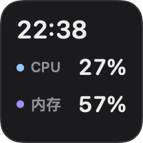

写给不需要懂电脑的人 · 全程不用术语，看不懂的地方可以直接跳过
想象你的电脑是一间厨房。
这个小面板就是厨房门口的仪表盘：告诉你现在有几个灶眼在开火、操作台上摆了多少东西、地下仓库有没有开始存货。
| 你想做的事 | 怎么做 |
|---|---|
| 让它消失一会儿 | 点一下屏幕最上方菜单栏里的数字 |
| 让它回来 | 再点一下 |
| 挪到别的位置 | 按住面板最上面那一行拖动（完整版是「DeskMonitor」标题行，简约模式是时间那一行） |
| 调整外观、刷新快慢 | 在菜单栏图标上右键 |
| 让它别挡住点击 | 右键 → 打开「点击穿透」（想关掉时再右键一次） |
| 只保留 CPU 和内存 | 右键 → 显示模块 → 关掉不需要的几项 |
| 让它变得很小 | 右键 → 简约模式 |
| 改天气显示的城市 | 右键 → 设置城市…，输入城市名 |
| 让它开机自己启动 | 右键 → 打开「开机自启」 |
| 彻底关掉 | 右键 → 退出 DeskMonitor |
菜单栏图标长这样：24% 9.4G，前面是 CPU，后面是内存。
如果觉得面板太占地方，打开简约模式，它会变成一个方块：

里面只有三样东西：时间、CPU、内存。
尺寸 104 × 104，完整版是 296 × 535——面积不到十五分之一。 想切回来，右键 → 简约模式，再点一次。
| 你关掉了什么 | 面板尺寸（宽 × 高） |
|---|---|
| 什么都不关 | 296 × 535 起 |
| 只留时钟 + CPU + 内存 | 296 × 约 327 |
| 简约模式 | 104 × 104 |
| 只留时钟（当桌面时钟用） | 296 × 约 57 |
高度会随内容变化：CPU 核心越多、进程列表行数不同、任务卡片有无，都会让数字略有出入。
从上到下，依次是：时间天气 → CPU → 内存 → 网络/磁盘/GPU → 进程。下面一块一块讲。
左边是当前时间，中间是日期和星期，右边是天气：图标 + 天气情况 + 温度。
17:00 11月17日 周二 ☁ 阴 16°
天气默认按你所在时区猜一个城市（比如「Asia/Shanghai」会猜成上海）。
整台电脑平均的忙碌程度。可以理解成「平均每个灶眼开了 43% 的火」。
| 数值 | 状态 |
|---|---|
| 30% 以下 | 很轻松 |
| 30% – 70% | 正常干活 |
| 80% 以上且持续很久 | 有点累，可能会卡 |
过去两分钟的忙碌变化，线越高越忙。
它的作用不是看「现在多少」，而是看趋势——是平稳，还是突然窜起来又掉下去。
每一根柱子 = 电脑里一个「灶眼」（核心）。柱子越高，说明那个核心此刻越忙。
高高的柱子 ██ → 这个核心在满负荷干活 矮矮的柱子 ▁▁ → 这个核心几乎闲着
柱子下面有编号 1、2、3 … 10，就是核心的编号，方便对号入座。
这 10 个核不是一样的，分两类：
| 颜色 | 编号 | 名称 | 通俗说法 |
|---|---|---|---|
| 亮色 | 7 – 10 | 性能核 P | 大火灶：干活快、费电。重活优先给它 |
| 暗色 | 1 – 6 | 能效核 E | 小火灶：慢一些但省电。轻活、后台任务用它 |
面板右上角那个 4P + 6E 说的就是这个：
合起来 10 个，正好对应下面 10 根柱子。
柱子: 1 2 3 4 5 6 │ 7 8 9 10
└───── 能效核 E ─────┘ └─ 性能核 P ─┘
颜色: 暗色（省电） 亮色（快）
三者加起来是 100%。
还是用厨房比喻：内存 = 操作台的面积。台面越大，能同时摊开的菜越多。这台电脑是 16 GB。
已经在用的台面 / 总台面。
| 颜色 | 名称 | 通俗解释 |
|---|---|---|
| 紫色 | 应用 | 正在做的菜——各个软件实际占的地方 |
| 橙色 | 联动 | 钉死在台面上的设备，搬不走。系统和显卡占的，永远不能挪 |
| 粉色 | 压缩 | 把暂时不用的菜打包压紧，占的地方变小 |
| 灰色 | 缓存 | 旁边备着的食材。随时可以扔掉，不算真占用 |
交换 = 把东西搬到地下仓库。操作台放不下了，电脑就把一些东西搬到硬盘上（仓库）。问题是：跑去仓库拿东西很慢，所以一旦动用交换，电脑就会开始卡。
| 显示 | 意味着 |
|---|---|
| 「未启用」 | 从来没搬过，状态很好 |
| 几百 KB ～ 几十 MB | 偶尔搬了一点，不用管 |
| 超过 256 MB | 开始变黄，注意了 |
| 超过 1 GB | 变红，是真不够用了 |
电脑自己判断的「挤不挤」：正常（绿）→ 偏高（黄）→ 严重（红）。
这个比数字更直观：数字高不一定挤（因为有缓存和压缩），但压力变黄变红就一定是真挤了。
| 这一行 | 什么意思 | 怎么看 |
|---|---|---|
| 网络 ↓ ↑ | 下载和上传速度 | 看视频卡不卡、下载跑满没有 |
| 磁盘 读 写 | 硬盘读写的速度 | 拷贝大文件、装软件时会涨 |
| GPU | 显卡的忙碌程度 | 玩游戏、剪视频、跑 AI 时会涨 |
| 剩余 | 硬盘还剩多少空间 | 低于 10% 该清理了 |
右边的两条小曲线，是过去两分钟的走势。
这里列出当前开着的软件，各自吃多少。
🍎 微信 ×14 4% 342M
这个软件其实开了 14 个进程，这一行的数字是它们加起来的。
拿 Steam 举例，它的 10 个进程是这样分工的：
| 进程 | 数量 | 干什么的 |
|---|---|---|
steam_osx | 1 | 主程序，就是看到的那个窗口 |
ipcserver | 1 | 内部通信 |
Steam Helper | 8 | 网络、画面、声音、崩溃上报等 |
浏览器更夸张，一个标签页可能就是一个进程。所以 ×14 的微信并不是「开了 14 个微信」，而是一个微信拆成 14 份在跑——这是现代软件的常规做法，好处是某一份崩了不会拖垮全部。
这台电脑有 10 个核心，所以：
100% = 1 个核心全速 = 只占整台电脑的 10% 400% = 4 个核心全速 = 占整台电脑的 40%
所以超过 100% 完全正常，也不是坏事。
它只说明一件事：这个软件在同时干好几件事（多线程）。比如微信一边收消息一边传文件，就会超过 100%。
真正在干重活的软件会更高：
| 在做什么 | 常见数值 |
|---|---|
| 导出视频 | 500% – 800% |
| 编译代码 | 700% – 900% |
| 玩大型游戏 | 600% 以上 |
这些都不是故障，是它该有的样子。
看颜色：
| 颜色 | 含义 |
|---|---|
| 白色 | 正常，占整机不到 30% |
| 黄色 | 这个软件吃了整机 30% 以上，有点猛 |
| 红色 | 吃了整机 60% 以上，几乎把电脑占满了 |
红色才值得看。而且要看它是不是一直红：
| 你看到的 | 是不是问题 | 该做什么 |
|---|---|---|
| 内存用了 90% | 不是 | 灰色缓存会自己让出来，不用管 |
| 内存满了但交换是 0 | 不是 | 状态很好 |
| 交换变黄 / 红 | 是 | 关掉不用的软件（浏览器标签最吃内存） |
| 压力显示「偏高 / 严重」 | 是 | 同上 |
| 某个软件 CPU 300% | 通常不是 | 看它是不是在干正事（导出、编译、游戏） |
| 某个软件 CPU 一直红 | 可能 | 电脑卡、发烫就关掉它 |
| CPU 柱状图全都很高 | 看情况 | 短时间正常，长期这样会卡 |
| 硬盘剩余 < 10% | 是 | 清理空间，否则会明显变慢 |
| 误解 | 事实 |
|---|---|
| 「内存用满了就是坏了」 | 不。灰色缓存是「备用的食材」，系统随时能扔掉。真正该看的是交换和压力。 |
| 「交换一出现就是坏了」 | 不。几百 KB 是常态（系统会预先建好仓库）。持续增长、超过 256 MB 才值得注意。 |
| 「CPU 超过 100% 是故障」 | 不。100% = 一个核心。多核机器上，400% 只是「用了 4 个灶眼」，很正常。 |
想知道每个数字具体是怎么算出来的，请看《使用说明（进阶版）》。